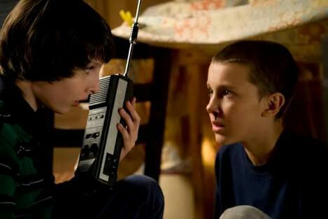

Testing CircuitPython Modules
MicroPython, a project by my buddy Damien George, is a complete reimplementation of the Python programming language for microcontrollers and embedded systems. Put simply, it's Python for extremely small computers (and I once wrote a book about it). CircuitPython, a friendly fork of MicroPython, is sponsored by the fantastic folks at Adafruit, a company who make playful and easy-to-use "hackable" technology while promoting a welcoming, friendly and diverse community of makers. They are led by legendary founder and electrical engineer extraordinaire, Limor "ladyada" Fried. CircuitPython is MicroPython for Adafruit's line of boards and with a consistent API for accessing the numerous bits of cool hardware you can use with such devices.
I was privileged to recently complete a block of work for Adafruit: I've
written a CircuitPython module called adafruit_radio that makes it
easy for
Bluetooth enabled
Adafruit boards to communicate with each other. The API is
a simplified version of the work myself and a number of other volunteers did on
the
equivalent functionality
for the BBC micro:bit (here's a tutorial I wrote for the micro:bit
radio, to make electronic "fireflies" blink at each other over
Bluetooth).
In the new Adafruit module, sending a message is as simple as:
from adafruit_radio import Radio
r = Radio()
r.send("Hello")
Receiving requires a loop (to allow the device to keep checking for messages), but is equally as simple:
from adafruit_radio import Radio
r = Radio()
while True:
message = r.receive()
if message:
# Do something useful with the message.
print(message)
The best model for thinking about this module is that of kids' walkie-talkies. Each radio is tuned to a certain channel upon which it broadcasts and receives. If you send a message, anyone else listening in on that channel and within range will receive it. You'll also receive messages broadcast on that channel from others within range. This is an ideal network topology because it's both familiar yet capable since other, more specialised, network topologies can be built on top of it. There is potential for users to grow from a simple "walkie-talkie" model of networking to something more sophisticated and of their own devising.

The channels in the module are numbered between 0-255 and can be set when
creating a Radio object (the default channel number is 42 in
honour of
Douglas Adams, who
saw so much humane potential in new technology yet mischievously warned of the
polluting effect of technology for technology's sake via the inept
work of the
Sirius Cybernetics Corporation):
from adafruit_radio import Radio
r = Radio(channel=123)
Alternatively, you can change channel at any time via the Radio
object's configure method (continuing the example above):
r.configure(channel=7)
Finally, in addition to sending strings of characters it's also possible to send and receive arbitrary bytes:
from adafruit_radio import Radio
r = Radio()
r.send_bytes(b"Hello")
Receiving bytes gives you the full context of the message expressed as a Python tuple consisting of three values: the raw bytes, the RSSI reading (i.e. strength of the signal, from 0 [max] to -255 [min]), and a timestamp representing the number (and fraction of) seconds since the device powered up, as demonstrated in the following REPL based example:
>>> from adafruit_radio import Radio
>>> r = Radio()
>>> r.receive_full()
(b'Hello', -40, 3245.155408037)
That's it! You can find the code in this GitHub repository. Special mention and thanks must be made to Adafruit's Scott Shawcroft and Dan Halbert who wrote the Bluetooth API I used. Because of their work I was able to create my module with less than a hundred lines of Python (at time of writing). Thanks chaps!
Armed with this context, I'm going to explain why and how I created a
comprehensive test suite for the adafruit_radio module.
I'd summarise my approach to testing as follows:
- Testing is fundamental for creating and maintaining well designed software. My experience is that it tends to produce code that is both simple and easy to understand because nobody wants to write complicated tests to exercise equally complicated code. The process of exercising code through tests forces a developer to think carefully about how their code is written while having the added benefit of demonstrating it works as expected. Simplicity and ease of understanding are desirable properties because such code is easier to read, correct and maintain and also indicates the author's own clarity of thought (a good sign). I also believe it helpful and friendly to write code that's easy for others to read and understand (I often imagine my code will be read by an intelligent beginner coder, because it forces me to explain and address my own assumptions about my code).
- I personally don't practice strict test-driven development, where one writes tests before writing the implementation. I prefer to explore, improvise, extemporise and play at first. I often try various different approaches to the task in hand and regularly re-draft. I'll often seek advice and comments from collaborators, colleagues and potential users of my code as soon as possible. Therefore, my highest priority when I start a new project is making my code simple enough so that it is very easy to change. Often this step in the coding process is called a "spike".
- Only when a project settles on a certain architecture, implementation or foundation of code do I add tests. I think of this as a sort of "hardening" process. When I'm happy with an approach I'll often re-draft the exploratory code I've already written, alongside writing tests to exercise that specific piece of code. I aim for, and often achieve, 100% test coverage (every line of my code is exercised in some way by a test). This process allows me to get a feel for how my API works from the point of view of a fellow coder encountering it for the first time.
- The hardening has another effect: I've baked in an expectation for how the code should behave via the tests. I also make sure my tests are commented in such a way that a meaningful intention behind the test is revealed. They're also a useful source of information for future users and/or maintainers of my code. Finally, and perhaps most importantly, they help manage change.
- No useful software is ever finished simply because the universe changes (and so must software). Despite our best efforts, software is often complicated and it's easy to forget something or not realise how a change in one part of the code may break another apparently unrelated part. Having a suite of tests to check all the aspects of a codebase helps future maintainers make changes with confidence.
- Being pragmatic, I sometimes don't follow the playful explorations outlined above. If I'm dealing with a well defined or mature protocol (for example), I'll quickly settle on an approach, usually based upon research into how other folks have solved the same problem, and proceed by writing tests based upon the protocol in order to measure the completeness, accuracy and progress of my resulting implementation.
The problem for developers writing for CircuitPython is that such code is usually to be run on microcontrollers with certain hardware capabilities. Yet such code is invariably written on conventional computers running operating systems such as Windows, OSX or Linux. The only way to know your code works is to try it on the target device. This is, to say the least, laborious compared to having the benefits of running an extensive test suite in a matter of seconds.
Having written my small and simple adafruit_radio module I
found myself missing the benefits of a comprehensive test suite. After asking
around, I found most Python modules for CircuitPython don't have a test suite
and there hadn't been much (if any) exploration for how to address this. Scott
suggested I add what I thought best in terms of testing to my module.
I wanted my solution to meet the following requirements:
- It works with existing Python testing tools so non-specialist Python developers feel at home and can bring their existing skills to CircuitPython with little effort.
- It runs on a conventional computer, because that's where developers do the majority of their work. (I'm constantly running and re-running my test-suite as I make changes to code.)
- It handles the problem of using CircuitPython-only modules in a test-suite run on a conventional computer with standard Python.
I decided to focus on using an existing, well known and mature Python testing tool called PyTest (the creation of another friend of mine, the extraordinarily prolific and very thoughtful Holger Krekel). The advantage of using PyTest is that it has a large number of plug-ins that are both useful and familiar to a large number of Python programmers. One such plug-in I use a lot is the Pytest coverage tool, which makes it easy to spot areas of a code base that are not exercised by a test suite. PyTest also has a well defined mechanisms to extend it to work in specialist testing situations (such as our own CircuitPython based context).
As far as I was concerned, using PyTest met the first two of my self-imposed requirements. I was left with the final problem of dealing with CircuitPython only modules that wouldn't work on a conventional computer.
This is where I need to introduce the concept of "mocking" in a test suite (as in "mocked up" rather than poking fun). Mocking is a way to replace parts of your system under test with "mocked up" objects and then make assertions about how such objects have been used. Thanks to another friend of mine (the huge hearted, funny and rather hairy Michael Foord), mocking is built right into Python's standard library.
My idea was simple: automatically mock away those parts of CircuitPython that don't work on a conventional computer. Such objects give the developer a way to check and ensure the module under test is working as expected with CircuitPython. It's even possible to specify how such mock objects should behave under certain conditions (such as when they may be the source of some sort of data which the module under test will use). However, this aspect of mocking should be used with great care -- more on which later.
If a developer creates a conftest.py file in their test suite
PyTest will import it before running any of the test code and use various
functions found therein to configure the test suite. For example, if PyTest
finds a function called pytest_runtest_setup in the
conftest.py file, then this function will always be called
immediately prior to any test function. Just what we need!
My conftest.py file
is very short and simply mocks away named aspects of CircuitPython which cannot
be run on a conventional computer immediately before any test is run, via the
aforementioned pytest_runtest_setup convention.
It means I can write conventional looking PyTest based unit tests like the following:
def test_radio_receive_full_no_messages(radio):
"""
If no messages are detected by receive_full then it returns None.
"""
radio.ble.start_scan.return_value = []
assert radio.receive_full() is None
radio.ble.start_scan.assert_called_once_with(
adafruit_radio.AdafruitRadio, minimum_rssi=-255, timeout=1
)
radio.ble.stop_scan.assert_called_once_with()
Some things you should know: radio.ble is a mocked away part of
CircuitPython. As a result, on the first line of my test function, I've been
able to tell the mock that the result of calling the start_scan
method is an empty list. Then I can assert that the method I want to test (the
radio.receive_full method returns None in this
context. Furthermore, I'm able to check in the final two statements of the
function that the start_scan method was called with the expected
arguments, and that an additional stop_scan method was called
too.
When I run the test suite, I see something like this:
$ pytest --cov-report term-missing --cov=adafruit_radio tests/
============================= test session starts ==============================
platform linux -- Python 3.7.5, pytest-5.3.0, py-1.8.0, pluggy-0.13.0
rootdir: /home/ntoll/src/adafruit_radio
plugins: cov-2.8.1
collected 12 items
tests/test_adafruit_radio.py ............ [100%]
----------- coverage: platform linux, python 3.7.5-final-0 -----------
Name Stmts Miss Cover Missing
-------------------------------------------------
adafruit_radio.py 61 0 100%
============================== 12 passed in 0.09s ==============================
Note all the feedback about code coverage..! Neat, huh?
A mock object, by its very nature, is a mock-up of something else... it's
not the real thing..! So what happens when the real thing (that has been
mocked-up in the test suite) changes? For instance let's imagine that the
result of a call to start_scan is no longer an empty list, but
something else. The tests will still pass because the mocked-up object doesn't
reflect the real object, yet when the module under test is used on a real
device with the changed version of CircuitPython then it won't work
correctly.
This is obviously not a good situation and why I mention mocks should be used with great care and attention.
The most obvious solution is for the developer in charge of the test suite to be careful and check API updates in the release notes of the modules being mocked away. However, this becomes a burden if the test suite mocks away a huge number of modules. It's also open to human error.
There are several ways to mitigate this problem, but because it's early days I've not been able to investigate these potential solutions properly. The best I can do at this point in time is shrug my shoulders, say things are under construction and invite folks to dive in and help. Our community would certainly be enriched by such collaborations.
In conclusion, I'm quite pleased with this first step in equipping CircuitPython modules with comprehensive test suites. Yet there's still plenty to do -- most notably, ways to address the problems mentioned with mocking.
As always, comments, constructive criticism and ideas expressed in a friendly, collaborative and supportive manner are most welcome.
Over to you... :-)